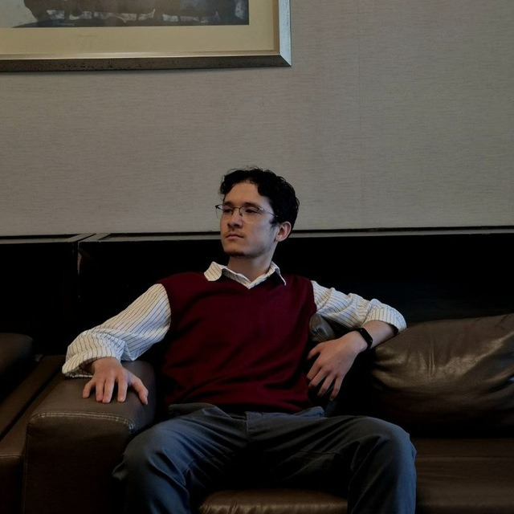
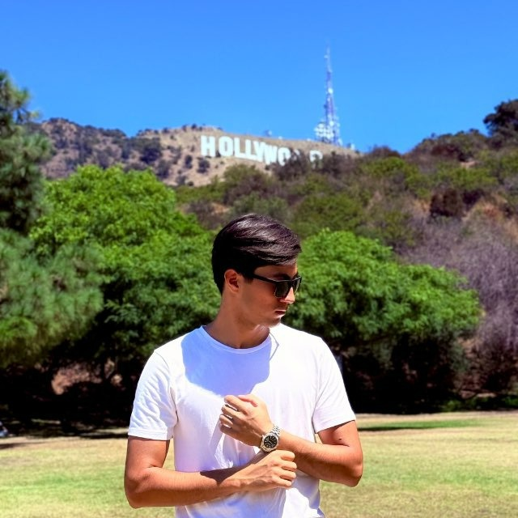

Kasallik Nomidan Tasdiqlangan Target va De Novo Dori Dizaynigacha
UMAY — genetik sababiyat, hujayra tarmog'i (PPI), hayotiy organlar xavfsizlik qalqoni, Closed-Loop Reinforcement Learning va avtonom robotik laboratoriyalarni yagona zanjirda birlashtirgan sun'iy intellekt platformasi.
Bizning Jamoa

Umaraliev Sayidmurod
Molekulyar Biolog, Genetik Muhandis & Bioinformatik
UMAY loyihasining asoschisi (Founder) hamda dasturda qo'llanilgan barcha bioinformatik, genetik va biofizik algoritmlar arxitektori. Molekulyar biologiya, genetik muhandislik, Target Discovery va De Novo dori dizayni algoritmlari muallifi.

Aslbek Toshboyev
Senior Data Scientist, AI Muhandis & Avtonom Algoritmlar Mutaxassisi
UMAY hammuassisi (Co-Founder), Senior Data Scientist va AI muhandisi. Platformaning Backend, Frontend, Deep Learning hamda avtonom algoritmik tizimlarini ishlab chiqish va masshtablashtirish rahbari.
Biologiya va Sun'iy Intellekt Sinergiyasi
Evropa (Masaryk), Turkiya (BEUN) va AQSH (University of Arizona) ilmiy tajribasini birlashtirgan xalqaro ilmiy-texnologik jamoa.
UMAY StartUp Nima va Nega Kerak?
Nega Dori Yaratish Shunchalik Qimmat va Sekin?
Bugungi kunda bitta yangi dorini kashf etib, klinikaga olib chiqish o'rtacha 12–15 yil vaqt va $2.5 milliarddan ortiq mablag' talab qiladi. Shunga qaramay, klinik sinovga kirgan har 100 ta nomzoddan 90 tasi muvaffaqiyatsizlikka uchraydi.
Dori Kashfiyotida Deterministik Muhandislik
UMAY StartUp — dori yaratish jarayonini "tasodifiy sinov va xato" usulidan chiqarib, to'liq avtonom, biofizik qonuniyatlarga bo'ysunadigan sun'iy intellekt konveyeriga aylantiradi.
UMAY Ekotizimi: Bosqichma-Bosqich Rivojlanish Rejasi
Target va Modality Kashfiyot Dvigateli
Kasallik nomidan kelib chiqib, 5 bosqichli biofizik filtr orqali eng ishonchli Top-3 Target Proteinni aniqlaydi va unga qaysi tibbiy vosita (Inhibitor, PROTAC, Activator yoki Gene Therapy) kerakligiga avtonom qaror beradi.
De Novo Kichik Molekula & PROTAC Dizayni
Target oqsilning 3D bog'lanish pocket'iga mos keluvchi yangi molekulalarni Closed-Loop RL, AutoDock Vina va OpenMM MD simulyatsiyalari yordamida noldan loyihalaydi va 3 sahifalik IND PDF Dossier beradi.
Gen Terapiyasi va Genetik Muhandislik
Hujayrada gen butunlay o'chirilgan (Total Loss of Function) va oqsil sintezlanmaydigan kasalliklar uchun AAV Capsid tanlovi, promotor dizayni, Codon Optimization va CRISPR yechimlarini yaratadi.
Bulutli Avtonom Laboratoriya Integratsiyasi
Raqamli dizaynni (in silico) API orqali bulutli robotik laboratoriyalarga (Strateos, Emerald Cloud Lab) ulab, fizik tajribalar o'tkazadi va olingan real Kd hamda IC50 natijalari bilan AI'ni qayta o'qitadi.
UMAY-1: Avtonom Target va Modality Kashfiyoti
| Mezon / Xususiyat | 1. An'anaviy Tadqiqotchi | 2. Tarqoq Dasturlar (OpenTargets, DisGeNET) | 3. Tijoriy AI Platformalar (PandaOmics va b.) | 4. UMAY-1 (Bizning Yechim) |
|---|---|---|---|---|
| Asosiy Metodologiya | Manuel PubMed, UniProt va NCBI maqolalarini o'qish | Alohida-alohida bazalardan qo'lda ma'lumot yig'ish | Asosan transkriptomik (omiks) va NLP matn qidiruvi | 5 Qatlamli Integratsiya: Inson Genetikasi + PPI Network + Organ Shield + 3D Pocket |
| Tahlil Vaqti | 3 oydan 6 oygacha | Haftalar | Soatlar / Kunlar | < 3 Daqiqa (To'liq Avtonom) |
| 3D Biofizika & Pocket Integratsiyasi | Mavjud emas (PDB'dan alohida qidiriladi) | Mavjud emas (Struktura dasturlari uzilgan) | Zaif / Uzilgan: Omiksga tayangan; 3D pocket masalasi kimyogarlarga qoldiriladi | To'g'ridan-to'g'ri: RCSB PDB yoki AlphaFold AI 3D koordinatalarini darhol yuklaydi |
| Hayotiy Organlar Xavfsizlik Qalqoni | Mavjud emas (Hayvon sinovida ma'lum bo'ladi) | Tadqiqotchi HPA'dan qo'lda tekshirishi shart | Asosan kasal to'qimaga qaraydi; yurak/jigar xavfsizligi ikkinchi darajali | Proaktiv HPA Qalqoni: Yurak, jigar va miyada xavfli genlarni 1-daqiqada elaydi |
| Terapevtik Modality Qarori | Mavjud emas (Odatiy inhibitor qilinadi) | Mavjud emas (Faqat gen ro'yxatini beradi) | Modality Ko'rligi: Inhibitor, PROTAC yoki Gene Therapy tanlovini qila olmaydi | Avtonom Router: Patologiyaga qarab eng to'g'ri modality'ni belgilaydi |
| Narx va Foydalanish | Yuqori mehnat va vaqt sarfi | Bepul, ammo katta bioinformatik jamoa kerak | $50,000 – $150,000 / yil | 100% BEPUL (Freemium) |
EFO Ontologiyasi & Genetik Sababiyat
Kasallik nomi xalqaro EFO ID'ga (masalan, EFO_0000518) o'giriladi. Open Targets GraphQL API orqali GWAS, ClinVar va somatik mutatsiyalar tahlil qilinadi.
5,000 gen ➔ Top 50 Driver Gen
PPI Tarmoq & Centrality Tahlili
STRING DB v12 API va NetworkX yordamida hujayra ichidagi oqsillar aloqa tarmog'i quriladi. Degree (tugun) va Betweenness (ko'prik) markaziyligi o'lchanadi.
50 gen ➔ 15-20 Master Regulator
HPA Hayotiy Organlar Qalqoni
The Human Protein Atlas (HPA) orqali 5 ta hayotiy organ tekshiriladi: Yurak (1.0), Jigar (0.90), Miya (0.85), Buyrak (0.80), Suyak ko'migi (0.75).
15-20 gen ➔ ~8-10 Xavfsiz Target
Tractability & Katta Final Formulasi
ChEMBL va Open Targets orqali oqsilning kichik molekula, antikor yoki PROTAC bilan bog'lanish qobiliyati (S_drug) baholanadi.
➔ TOP-3 CHEMPION TARGET
RCSB PDB & AlphaFold 3D
Top-3 target uchun avval RCSB PDB'dan eksperimental X-ray/Cryo-EM kristali qidiriladi. Kristali bo'lmasa, DeepMind AlphaFold DB'dan AI 3D modeli yuklanadi.
➔ 3D Atomik Koordinatalar Tayyor
Top-3 Target Uchun Avtonom Terapevtik Modality Qaror Daraxti
Biologik shart: Oqsil haddan tashqari faol (Gain-of-Function / Overexpression) VA yuzasida chuqur, dori o'tirishi mumkin bo'lgan 3D katalitik pocket mavjud.
Biologik shart: Oqsil klassik inhibitorlarga chidamli (rezistent) YOKI uning yuzasi silliq/sayoz (Undruggable Scaffold). E3 Ligase chaqirib oqsilni parchalaydi.
Biologik shart: Gen mutatsiyaga uchragan va oqsil sust ishlamoqda (Partial Loss of Function / Haploinsufficiency). Oqsil faolligini oshiradi.
Biologik shart: Gen butunlay o'chirilgan (Biallelic Deletion / Nonsense) va hujayrada oqsil umuman sintezlanmaydi (Total Loss of Function).
UMAY-2: De Novo Molekula Dizayni va IND Dossier
3D Pocket va Grid Box Aniqlash
UMAY-1'dan kelgan .pdb tuzilmasidagi katalitik bo'shliqning aniq markazi (center_x, center_y, center_z) va 20×20×20 Å quti o'lchamlari avtomatik hisoblanadi.
SELFIES va Tug'ilish Filtri
100% kimyoviy yaroqli SELFIES alifbosi. Sof uglevodorodlar taqiqlanadi: kamida 2 ta Heteroatom (N, O, S), 20 ≤ TPSA ≤ 140 Ų, HBD+HBA ≥ 2 va MW ≥ 220 Da shart.
Closed-Loop RL (10k ➔ 100 Docking)
Har siklda 1,000 ta molekula yaratilib, Bayesian tanlov orqali eng yaxshi 20 tasi AutoDock Vina bilan dock qilinadi. 5 sikl davomida AI yuqori mukofotli (Reward) kimyoviy motivlarni o'rganadi.
Fizikaviy Docking va MPO Skori
Meeko orqali 3D konformatsiya va PDBQT zaryadlari tayyorlanadi. MPO Cost = Vina bog'lanish energiyasi (kcal/mol) + Lipinski + SA Score (Sintetik osonlik) + QED.
10 ns Molekulyar Dinamika & PLIP
Molekulaning fiziologik suv muhitida pocket ichida qolish barqarorligi (Pocket Retention %), RMSD (Å) va PLIP atomik bog'lanishlari (H-Bond, π-π stacking, Hydrophobic) o'lchanadi.
ADMET & Farmakokinetik Profil
Plazma oqsillariga bog'lanish (PPB %), erkin fraksiya (fu = 100 - PPB), Kan-Miya Baryeri (logBB), hERG kardiotoksiklik va CYP450 metabolik barqarorlik.
UmayAutonomousAuditor (QA) & 3 Sahifalik Rasmiy IND PDF Dossier
Natija foydalanuvchiga ko'rsatilishidan oldin 5 qatlamli ichki auditor barcha jadvallar o'rtasidagi biofizik va matematik muvofiqlikni tekshiradi, ikiz (duplicate) SMILES'larni tozalaydi va ReportLab yordamida xalqaro regulyator standartidagi 3 sahifalik preklinik PDF Dossier'ni yaratadi.
Aqlli Closed-Loop RL Sikli
10,000 ta molekulani bittadan dock qilish haftalar oladi. UMAY-2 esa Active Learning orqali buni bir necha daqiqada bajaradi:
Tibbiy Kimyo (MedChem) Qalqoni
Kimyo professorlari va regulyatorlar rad etadigan "soxta" molekulalar tug'ilishidayoq bloklanadi:
-
Sof Uglevodorod Taqiqi: Suvda erimaydigan naftalin/benzol kabi sof uglevodorodlar (
TPSA = 0) avtomatik elanadi; kamida 2 ta heteroatom (N, O, S) majburiy. -
Lead-Like Molekulyar Og'irlik: Juda kichik fragmentlar o'rniga haqiqiy dori nomzodlari uchun
MW ≥ 220 Dachegarasi. - SA Score (Sintetik Osonlik): Laboratoriyada sintez qilib bo'lmaydigan murakkab qafasli tuzilmalarga MPO funksiyasida jarima beriladi.
5 Qatlamli Avtonom Ichki Auditor va IND PDF Dossier
Har bir simulyatsiya yakunida UmayAutonomousAuditor barcha biofizik ko'rsatkichlarni tekshiradi:
0.0% (Hydrophobic / π-Driven) qilib to'g'rilanadi.-C(=O)O) faqat musbat (ARG, LYS, HIS) yoki neytral qutbli rezidular bilan juftlanadi.fu = round(100.0 - PPB, 2) qoidasiga bo'ysunadi va yuqori PPB bo'lsa Developability skori moslashtiriladi.- Sahifa 1: Target Triangulation, 2D Tuzilma & Fizik-Kimyoviy Radar
- Sahifa 2: AutoDock Vina, 10ns MD Simulyatsiya & PLIP Jadvali
- Sahifa 3: ADMET Profili, Toksikologiya & Regulyator Xulosasi
UMAY-3 (Gen Terapiyasi) va UMAY-4.1 (Bulutli Robotik Lab)
Oqsil Bo'lmagan Joyda — Gen Muhandisligi
Kichik molekulalar faqat hujayrada mavjud bo'lgan oqsillarga bog'lana oladi. Biroq SMA, Duchenne mushak distrofiyasi yoki Sanfilippo (MPS IIIC) kabi irsiy kasalliklarda gen butunlay yo'qolgan yoki stop-kodon tufayli oqsil umuman sintezlanmaydi. Bu holatda UMAY-3 ishga tushadi:
Raqamli Dizaynni Robotik Tajribaga Ulash
UMAY-4.1 tashqi foydalanuvchilar uchun taqdim etiladigan eng yuqori bosqichdir. U kompyuterda loyihalangan (in silico) molekulani bulutli avtonom laboratoriyalarning (Strateos, Emerald Cloud Lab) robotik qo'llariga API orqali to'g'ridan-to'g'ri ulaydi:
UMAY-4.2: O'zimizning Avtonom Robotik Biyofabrikamiz
To'xtovsiz Ishlaydigan, O'zi Gipoteza Yaratib, Tajriba O'tkazadigan Sun'iy Intellekt Laboratoriyasi
Nega oldingi modulni UMAY-4.1 deb nomladik? Chunki UMAY-4.1 — tashqi foydalanuvchilar va farmatsevtika kompaniyalari foydalanishi mumkin bo'lgan oxirgi bulutli versiyadir. UMAY-4.2 esa faqat bizning o'zimiz uchun ishlaydigan, o'zimiz barpo etadigan jismoniy robotik laboratoriyamizdir.
Avtonom Gipoteza
AI inson buyrug'ini kutmasdan 24/7 rejimda global genomik va klinik ma'lumotlarni tahlil qilib, davosi yo'q kasalliklar uchun yangi ilmiy gipoteza va target'larni o'zi kashf etadi.
De Novo Molekulyar Dizayn
Kvant kimyosi, molekulyar dinamika va generativ RL yordamida eng yuqori selektivlikka ega yangi dori molekulalarini va sintez marshrutini loyihalaydi.
Robotik Sintez va Sinov
O'zimizning robotik laboratoriyamizdagi avtomatlashtirilgan sintezatorlar va yuqori o'tkazuvchanlikdagi skrining robotlari molekulani fizik sintez qiladi va hujayrada sinaydi.
O'z-o'zini O'qitish & Patent
Har bir muvaffaqiyatli va muvaffaqiyatsiz tajribadan AI o'zini-o'zi o'qitadi va bizga to'liq tasdiqlangan, xalqaro patentga (IP) tayyor original dori molekulalarini chiqarib beradi.
Global SaaS Platforma Daromadi
UMAY-1 ni bepul (Freemium) tarqatib minglab olimlar va biotexnologik kompaniyalarni ekotizimga jalb qilamiz, UMAY-2, UMAY-3 va UMAY-4.1 obunalari orqali doimiy barqaror pul oqimini (Cash Flow) yaratamiz.
Xususiy Dori Patentlari (Proprietary IP)
UMAY-4.2 faqat biz uchun kechayu-kunduz ishlab, original molekula va gen terapiyasi patentlarini yaratadi. Bu esa kompaniyamizni global farmatsevtika gigantlari qatoriga olib chiquvchi asosiy strategik qudratdir.